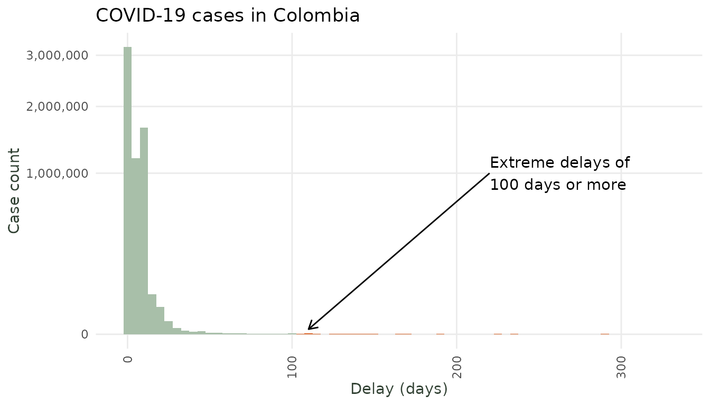

Handling Outlier Delays with Censoring
diseasenowcasting team
Source:vignettes/Handling_Outlier_Delays_with_Censoring.Rmd
Handling_Outlier_Delays_with_Censoring.RmdTL; DR
In general the workflow is:
Fit a nowcast.
When new data arrives use
update()to get warnings about extreme values.A human with domain-knowledge identifies which ones correspond to outliers and which correspond to true values.
The
censor_reporting_delays_above()function turns extreme delays into upper bounds.Model is re-updated using the censored data consequently improving the delay distribution.
Backtest to verify the fit improved.
The problem: an extreme delay
Real surveillance data occasionally contains reports with extreme
reporting delays. This can be due to typos, healthcare-system hurdles or
other issues not related to the disease’s natural evolution. In
Colombia’s COVID-19 data (covid_colombia) the bulk of
reports arrive within a week or two, but a handful take more
than 100 days:
data(covid_colombia)
tbl_covid <- covid_colombia |>
tbl_now(event_date = notification_date,
case_count = n,
data_type = "count-incidence",
report_date = diagnosis_date,
t_effects = temporal_effects(day_of_week = TRUE))
summary(tbl_covid$.delay)
#> Min. 1st Qu. Median Mean 3rd Qu. Max.
#> 0.0 4.0 10.0 11.6 17.0 330.0
Reporting-delay distribution of COVID-19 Colombia (extremes exagerated for illustration purposes). A few reports arrive hundreds of days late.
When a parametric delay model (log-normal, gamma, …) is fit to data containing such an outlier, the extreme value drags the estimated delay distribution to the right. The model then believes delays are longer than they really are, thus inflating the most recent nowcasts.
The diseasenowcasting framework offers a fix. It treats
such reports as right-censored. Instead of telling the
model “this case had delay exactly 330”, it tells it only “this case
arrived by delay 330” (i.e. its delay of 330 is an
upper bound for the true delay).
In what follows we explain how to use the model to automatically detect extreme delays and how to inform the model so that predictions are improved.
1) Fit a model
The first step for a model to learn about extreme delays is
to have an initial model with historical data so that it learns what the
usual distribution is. In this case we’ll work with an early-pandemic
window and fit a nowcast(). To play out the “new data
arrives” story we first fit on the reports available at an early date
(2020-08-31):
#Initial data
initial_tbl <- tbl_covid |>
filter(
notification_date <= as.Date("2020-08-31") &
diagnosis_date <= as.Date("2020-08-31")) |>
change_now() #Update the "now" of the nowcast to the latest dateWe then fit a nowcast to this data (in this example, the next day,
2020-09-01):
initial_ncast <- nowcast(initial_tbl)2) Update the model
We can then get new data:
new_data_tbl <- tbl_covid |>
filter(
notification_date <= as.Date("2020-09-01") &
diagnosis_date <= as.Date("2020-09-01")) |>
change_now()and update() the model. This will automatically score
the new data against the old fit and warn that
something is amiss:
nc_updated <- update(initial_ncast, new_data_tbl)
#> Warning: ! Surprising reporting delay of 114 days (1 report): longer than the model
#> expects (P(D >= d) = 0.00051).
#> ! Surprising reporting delay of 112 days (1 report): longer than the model
#> expects (P(D >= d) = 0.00055).
#> ! Surprising reporting delay of 99 days (1 report): longer than the model
#> expects (P(D >= d) = 0.00087).
#> ℹ If these are outliers, treat them as censored with
#> `tbl.now::censor_reporting_delays_above()` and re-fit.
#> ℹ See all flagged delays with `extreme_values(nc)`.The warning tells us exactly what was unexpected (reporting
delays far longer than usual). The full table is available via
extreme_values():
extreme_values(nc_updated)
#> delay weight mean_tail_prob cdf_prob lpd relative_surprise direction
#> 1 99 1 0.000870 0.999130 -10.3354 3e-04 long
#> 2 112 1 0.000547 0.999453 -10.8867 2e-04 long
#> 3 114 1 0.000511 0.999489 -10.9672 1e-04 long
#> surprise level
#> 1 delay 0.99
#> 2 delay 0.99
#> 3 delay 0.99The mean_tail_prob expressess the probability of
observing such a value, The cdf_prob the probability of
lying below that value. Variable level shows the level of
certainty to qualify something as an outlier (default =
0.99) and can be modified in
update(..., level = 0.95). Column delay
corresponds to the observed delay and weight corresponds to
how many times it was observed. Finally lpd stands for the
log pointwise predictive density value.
3) Censor the outliers and re-fit
We follow the warning’s advice: we flag as censored
every report whose delay exceeds a sensible bound (here 99 days as
reported by extreme_values()). The function
censor_reporting_delays_above() works by setting the
report-censoring flag in the tbl_now for reports greater
than the max_delay. Extreme delays are thus turned into
upper bounds. The nowcast() then reads the
.is_censored_report flag automatically.
new_data_tbl_censored <- tbl.now::censor_reporting_delays_above(new_data_tbl, max_delay = 99)
# Adds column `.is_censored_report`:
new_data_tbl_censored#> # A tibble: 7,798 × 8
#> # Data type: "count-incidence"
#> # Frequency: Event: `days` | Report: `days`
#> .is_censored_report notification_date diagnosis_date sex n .event_num
#> <lgl> <date> <date> <chr> <int> <dbl>
#> [is_censored_report] [event_date] [report_date] [...] [cas… [...]
#> 1 FALSE 2020-03-02 2020-03-06 Female 1 0
#> 2 FALSE 2020-03-03 2020-03-14 Female 1 1
#> 3 FALSE 2020-03-06 2020-03-09 Male 1 4
#> 4 FALSE 2020-03-07 2020-03-09 Female 1 5
#> 5 FALSE 2020-03-08 2020-03-11 Female 2 6
#> 6 FALSE 2020-03-09 2020-03-11 Female 1 7
#> 7 FALSE 2020-03-09 2020-03-11 Male 2 7
#> 8 FALSE 2020-03-10 2020-03-11 Female 1 8
#> 9 FALSE 2020-03-10 2020-03-12 Female 2 8
#> 10 FALSE 2020-03-10 2020-03-13 Male 1 8
#> # ────────────────────────────────────────────────────────────────────────────────
#> # Now: 2020-09-01 | Event date: "notification_date" | Report date:
#> # "diagnosis_date"
#> # left-censored indicator: ".is_censored_report"
#> # T. effects (lazy): [event_date] day_of_week
#> # ────────────────────────────────────────────────────────────────────────────────
#> # ℹ 7,788 more rows
#> # ℹ 2 more variables: .report_num <dbl>, .delay <dbl>We refit but this time using the censored data:
nc_updated_censored <- update(initial_ncast, new_data_tbl_censored)The fitted values change once the outliers are no longer taken literally.
#Previous
coef(nc_updated)
#> delay_mu delay_sigma phi_nb mu_intercept log_gp_alpha log_gp_ell
#> 2.2038885 9.4014684 0.1163514 7.6301597 1.2491421 -1.6613061
#Updated
coef(nc_updated_censored)
#> delay_mu delay_sigma phi_nb mu_intercept log_gp_alpha log_gp_ell
#> 2.21249391 9.39874394 0.07725793 7.65705063 1.23662511 -1.63723758Which also affects predictions:
#Previous
pred_previous <- predict(nc_updated)
summary(pred_previous) |> tail(6)
#> mean median sd mad q2.5 q5 q10 q25 q50
#> 179 10621.87 10208.5 2436.004 1943.689 7263.625 7627.00 8088.7 9011.25 10208.5
#> 180 11158.63 10642.0 2840.630 2311.373 6995.325 7543.15 8182.7 9257.00 10642.0
#> 181 10851.00 10266.0 3303.548 2703.521 6074.425 6688.90 7413.9 8647.50 10266.0
#> 182 10566.95 9995.0 3505.949 3057.862 5240.650 5922.15 6687.5 8154.00 9995.0
#> 183 12605.03 12043.0 3992.945 3344.004 6608.850 7502.15 8366.4 9973.50 12043.0
#> 184 12238.81 11649.0 4321.819 3662.763 5719.650 6552.60 7448.7 9342.50 11649.0
#> q75 q90 q95 q97.5 .event_num event_date
#> 179 11674.25 13639.3 15143.35 16549.02 178 2020-08-27
#> 180 12493.00 14904.3 16391.60 18002.75 179 2020-08-28
#> 181 12349.75 14836.7 17059.35 19110.97 180 2020-08-29
#> 182 12415.00 14976.4 17010.30 18923.38 181 2020-08-30
#> 183 14481.00 17553.6 19772.10 22790.27 182 2020-08-31
#> 184 14284.00 17821.2 19995.90 22310.22 183 2020-09-01
#Updated
pred_censored <- predict(nc_updated_censored)
summary(pred_censored) |> tail(6)
#> mean median sd mad q2.5 q5 q10 q25 q50
#> 179 10745.81 10445.0 2322.839 2114.188 7323.950 7671.65 8163.8 9095.75 10445.0
#> 180 11119.24 10652.5 2771.554 2298.771 7045.800 7596.85 8096.9 9237.75 10652.5
#> 181 10900.04 10327.5 3253.262 2767.273 5947.975 6803.55 7457.9 8660.00 10327.5
#> 182 10794.08 10288.0 3545.292 3191.296 5440.875 6073.00 6883.8 8306.00 10288.0
#> 183 12787.52 12174.0 4020.706 3564.912 6748.600 7420.50 8339.8 10026.50 12174.0
#> 184 12375.19 11851.0 4167.569 3812.506 5582.525 6654.85 7794.3 9491.25 11851.0
#> q75 q90 q95 q97.5 .event_num event_date
#> 179 11967.25 13643.8 15006.40 16232.67 178 2020-08-27
#> 180 12417.75 14742.6 16143.50 17705.32 179 2020-08-28
#> 181 12516.00 14969.0 16853.50 19175.27 180 2020-08-29
#> 182 12710.00 15118.3 16875.15 18630.30 181 2020-08-30
#> 183 14901.50 17901.3 20192.50 22214.62 182 2020-08-31
#> 184 14655.75 17629.5 19624.75 22286.75 183 2020-09-014) Does it nowcast better? Backtest
Finally we check if controlling the extreme values actually
improves accuracy. We backtest the same model on the plain data
(new_data_tbl) and on the censored data
(new_data_tbl_censored) across a set of dates, scoring the
most recent nowcast (d^* = 0) against
the eventual truth with the Weighted Interval Score (WIS; lower is
better) and coverage (closer to the expected coverage the better).
#dates to backtest
eval_dates <- as.Date(c("2020-04-15", "2020-05-01",
"2020-05-15", "2020-06-01"))
#Backtest each model on the same dates
bt_plain <- backtest(new_data_tbl, dates = eval_dates)
bt_cens <- backtest(new_data_tbl_censored, dates = eval_dates)
rbind(
plain = score(bt_plain, report = F)[,c("wis","coverage_50","coverage_90")],
censored = score(bt_cens, report = F)[,c("wis","coverage_50","coverage_90")]
)
#> wis coverage_50 coverage_90
#> plain 196.0584 0.5 0.5
#> censored 206.6658 0.5 0.5Censoring these outlier delays result in a lower (better)
WIS and a similar coverage in this example.
Though in a real test we would need to backtest through
more dates to reach a conclusion.
Summary – fit -> update -> identify outliers -> censor -> refit loop
In general the workflow is:
Fit a nowcast.
New data arrives ->
update()scores it and warns about potential outliers.Manually identify which ones correspond to outliers and which correspond to true values. This has to be done by a human as no automated system will know when something flagged as noise is real.
Use
tbl.now::censor_reporting_delays_above(tn, bound)to turn the delays into an upper bound. Or modify thetbl_nowdirectly (columnis_censored)Re-fit -> the delay distribution is no longer distorted.
Backtest to verify the fit improved.